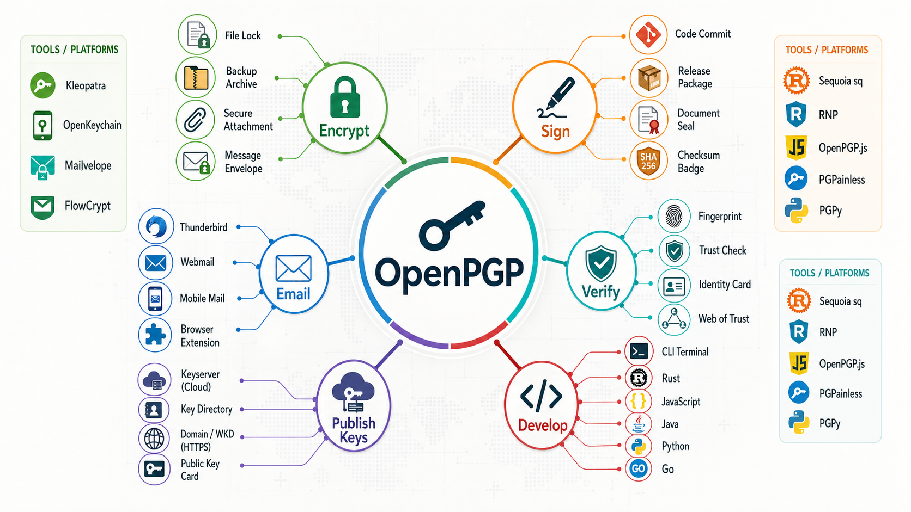

Confidentiality
Encrypt email, attachments, exported data, archives, and backups so only the intended private key can read them.
Practical public-key security
Use a public key so others can encrypt to you and verify your signatures. Keep the private key protected so only you can decrypt, sign, certify, or authenticate.

Contents
Jump to the part you need, then come back here when you want another path through the material.
Overview
Encrypt email, attachments, exported data, archives, and backups so only the intended private key can read them.
Sign mail, files, commits, release artifacts, and checksums so recipients can verify who produced them and whether they changed.
Certify that a public key belongs to a person, project, or role. A key signing party is about making those identity checks explicit.
Usage map
Protect message contents, attach encrypted files, and sign mail so recipients know it came from the expected sender.
Encrypt individual files, archives, backups, exports, or one-off payloads before moving them through untrusted storage.
Sign source releases, packages, checksums, Git tags, and commits so users can verify provenance before trusting downloads.
Confirm a key fingerprint against a person or organization, then certify the public key with your own key.
Make your public key discoverable through keyservers, Web Key Directory, direct sharing, or project documentation.
Some OpenPGP subkeys can be used for authentication, including smart-card-backed workflows and SSH integration in some setups.
Tool chooser
The four cards below are the most useful first stops for a key signing party. Use the filter tags after them to narrow the full directory by platform, use case, or search text.
 OpenKeychain
Android key storage and sharing.
Android
OpenKeychain
Android key storage and sharing.
Android
No tools match those filters yet. Try a broader platform or usage.
Instructions
This is a learning path with real next clicks, not a closed checklist. Pick a tool first, then use these links to understand each decision.
Start with the tool chooser, then compare the broader OpenPGP software directory if your platform is unusual.
Thunderbird users can follow the Thunderbird OpenPGP FAQ. Others should use their tool's key creation or import guide, then back up the secret key and revocation plan.
Use keys.openpgp.org, direct public-key export, or Web Key Directory for a domain-based setup.
At an event, compare the full fingerprint and identity proof before certifying. For background, read OpenPGP's overview of certificates and webs of trust in the OpenPGP overview.
Email users can send signed mail first, then encrypted mail. Developers can use Git signing documentation, the developer library directory, or their release system's package-signing guide.
Set expiration dates, extend them intentionally, and publish revocations when a key is lost, compromised, replaced, or no longer represents the identity. Check how your chosen tool handles revocation before the event.
Safety checks
Use a strong passphrase, keep backups encrypted, and consider a hardware token for long-lived or high-trust keys.
Short key IDs are not enough. Compare the complete fingerprint before certifying, trusting, or publishing instructions.
Send a signed test message, decrypt a test file, and confirm that your public key is discoverable before the event.
Know how you will revoke a lost or compromised key. A revocation plan turns a bad day into a manageable rotation.
Links